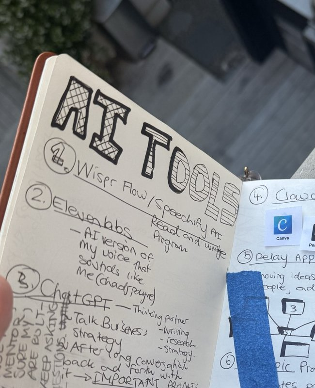

Build with AI.
Run on AI.
AnthroWorks is a South African holding company that builds consumer AI products, operates with autonomous AI infrastructure, and brings this capability to businesses across the continent. One founder. Institutional-grade output. Rooted in anthropological thinking.
Three capabilities. One company.
AI Product Studio
A consumer AI app portfolio. Nine apps built on a 90-day cadence, led by IZWI — a nature identification app powered by cultural knowledge and indigenous naming systems.
Explore the Studio →AI Strategy & Operations
We bring AI-first infrastructure to South African businesses. Autonomous agents, automated workflows, and the operational playbook we run ourselves — deployed for clients.
Cultural Research
Anthropological thinking applied to product, brand, and strategy. Indigenous knowledge systems, community-centred methods, and deep contextual research.
Our Approach →IZWI
Nature identification. Cultural knowledge.
IZWI identifies plants, birds, insects, and wildlife — returning their indigenous names, cultural significance, and traditional uses alongside scientific data. Built with Claude Haiku, powered by a curated cultural corpus that no competitor can replicate.
Learn MoreAI-first. Always on.
AnthroWorks runs on KODA — an autonomous AI agent deployed on a dedicated server, connected to 55 Notion databases, Gmail, and Telegram. KODA handles daily briefings, inbox triage, competitor monitoring, and lead scoring. Twenty-four hours a day, seven days a week.
This isn’t a demo. It’s how a solo founder produces institutional-grade output. The website you’re reading was designed and built using Claude Code. The strategy behind it was researched and structured by KODA. The operations run themselves.
This is the capability we bring to South African businesses.

Anthropological thinking. AI execution.
Observe
Every product and strategy begins with cultural research. Anthropological thinking, indigenous knowledge systems, and deep attention to context. We understand before we build.
Build
AI products rooted in depth, not trends. Design-led, corpus-backed, and built on a 90-day cadence. Each app addresses a real gap with cultural intelligence no competitor can replicate.
Automate
AI-first operations that compound daily. Autonomous agents, automated workflows, and intelligent infrastructure. The systems get smarter while we sleep.
“The website is the case study. The infrastructure is the proof. The output speaks for itself.”
Let’s talk
Building something that needs AI capability? Curious about what autonomous operations could do for your business? We’d like to hear from you.